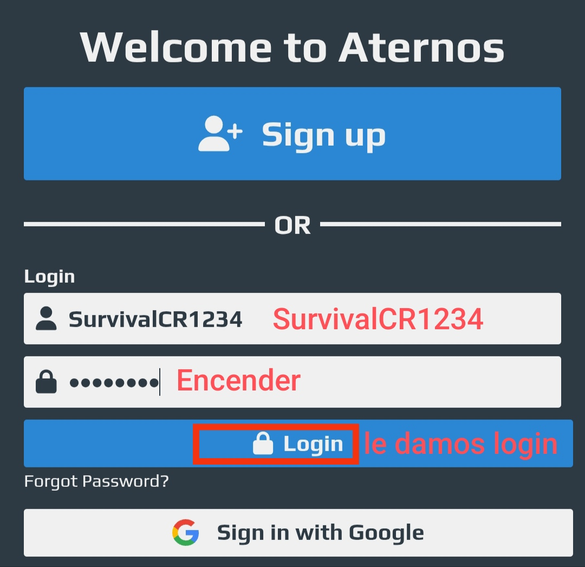
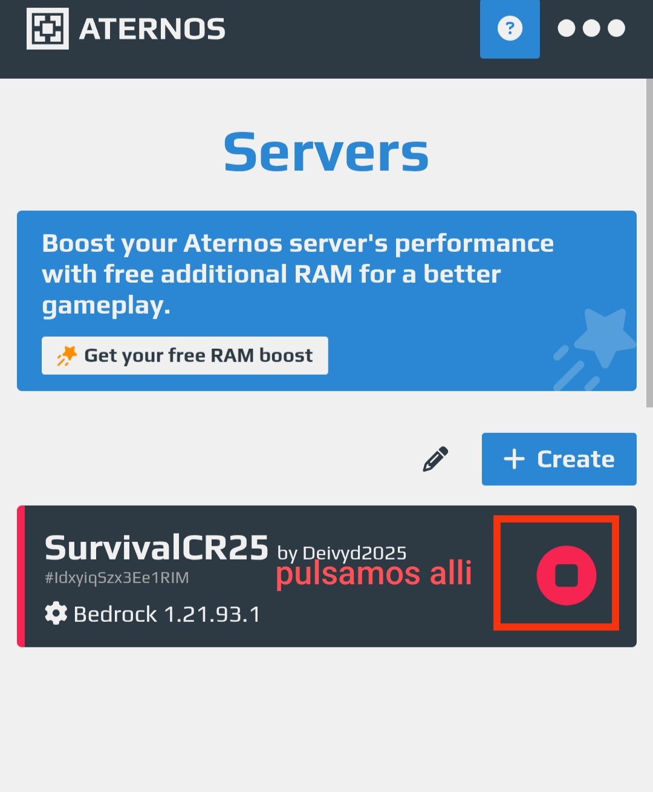
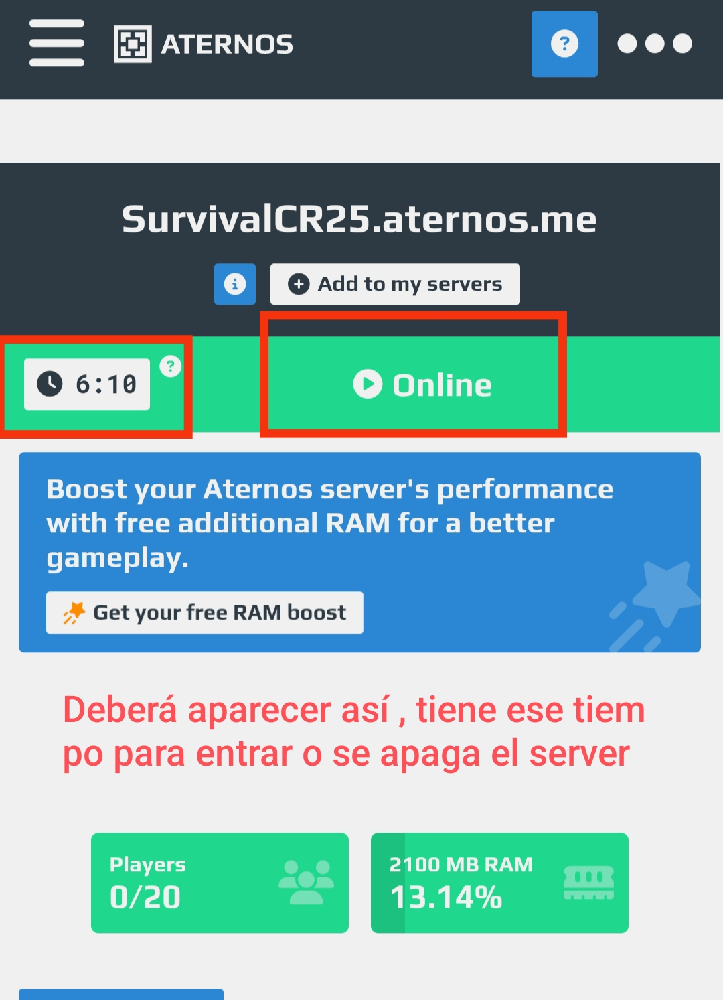

Tutorial paso a paso
1. Inicia sesión con los datos anteriores.
2. Haz clic en “Iniciar” para encender el servidor.
3. Espera unos minutos hasta que el servidor esté en línea.
4. Entra al servidor desde Minecraft con el IP correspondiente.